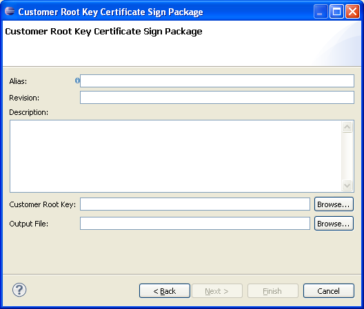

How to create customer root key sign package for the U5500/U8500/M7400/L9540
platforms
A customer root key sign package is a container that is used by the
Sign Server to determine which key and certificate to use when signing
a customer root key certificate.
Pre-requisites
Please make sure that you have access to a public or private PEM formatted customer root key.
Instructions
Open the Customer Root Key Sign Package Wizard by completing
the following steps:
- In the Eclipse menu, select File -> New > Other... (or
press Ctrl+N)
- Expand the Flash Kit category to make the Sign Packages
category visible
- Expand the Sign Packages category to see the
Customer Root Key Sign Package
- Select the Customer Root Key Sign Package and press Next
The following dialog will pop-up and the user must fill in
correct values in order create the sign package

Required Fields:
- Alias: The name of the sign package. This is used as input
when signing software using the sign tool
- Revision: The sign package revision
- Description: The sign package description
- Customer Root Key: Must be a PEM formatted RSA private or public key.
- Output file: The path to the file where to write the sign
package. The recommended file extension is .pkg